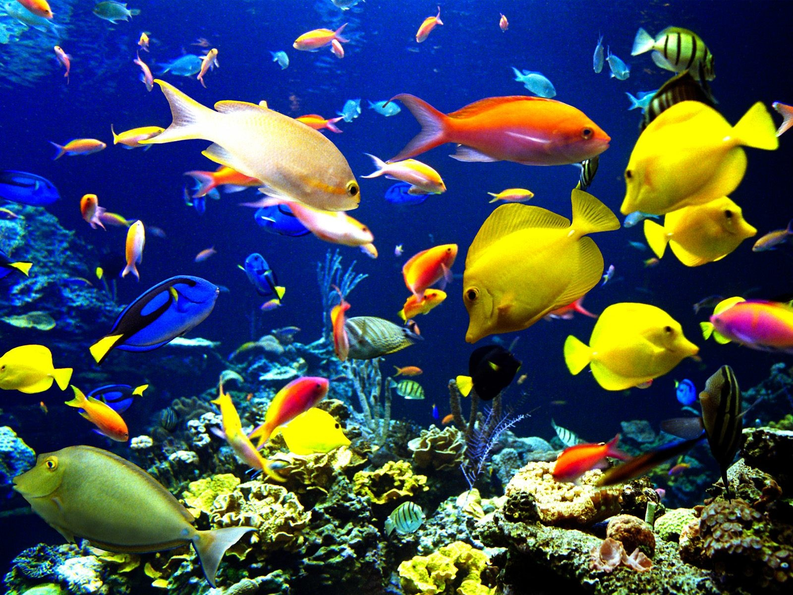

Vida Marina
Una de las características principales del medio marino es que la vida se desarrolla en tres dimensiones, estando por tanto distribuida sobre el fondo y en toda la masa de agua
En la costa los acantilados se adentran en el mar, originando fondos donde la roca adquiere diversidad de formas, en vivo contraste con la placidez de las arenas que la rodean. Esta roca, con un sinfín de huecos, hendiduras, cuevas, extraplomos, y paredes de verticalidad variable, da paso a fondos sedimentarios de diferente naturaleza y granulometría, que se extenderán por la plataforma continental, parte del talud y las llanuras abisales. La roca también puede volver a aflorar en la plataforma y el talud continental. Este conjunto de roca y sedimentos, que ocupa prácticamente el 70% de la superficie de la Tierra, configura un amplio abanico de condiciones ambientales, lo que permite a una gran diversidad de organismos encontrar aquí las condiciones necesarias para vivir y reproducirse, a la vez que también encuentran alimento, cobijo y sustrato donde fijarse o enterrarse.